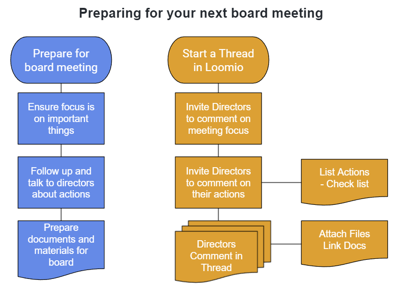

Bringing your board processes into Loomio
Introducing people to a new tool doesn't just happen - it requires some intentional work on the part of everyone to build new patterns of work and behaviour, while respecting the different challenges everyone has in fulfilling their role.
It helps a lot if you can bring familiar board processes into Loomio. This will help everyone become familiar with the tool and appreciate the value it can bring your board.
As a discussion and decision-making tool, Loomio is flexible and can be configured to suit you.
Here are some examples of how you can apply common board processes in Loomio.
Preparing for the next board meeting
Board work process:
- follow up and talk to directors about actions
- ensure the focus of the meeting is about the most important things
- documents, materials and board papers
- progress of actions from previous meeting
- notify directors and send board papers
- agree a date/time for the next meeting
On Loomio: Use a Loomio Thread to prepare for your board meeting:
- notify directors about the next meeting
- invite comment about the most important things to focus on
- attach or link documents and other necessary materials
- summarise actions and invite directors to update on their tasks

Use a Loomio Time Poll to find the next meeting date.
Why does your board need an online place for discussion and decisions?
Good governance exists where an organization has systems and processes in place that are appropriate to its circumstances, and which enable the organization to pursue its purpose effectively and meet its obligations under the law.
“It is participatory, consensus-oriented, accountable, transparent, responsive, effective and efficient, equitable and inclusive and follows the rule of law.”
Underpinning all of these principles is the need for good communication.
Here are some or the challenges directors and boards experience:
- Getting directors together in person
- Time available to consider important issues
- Urgency of critical issues
- Online video meeting fatigue
- Directors in multiple, remote locations, sometimes with poor internet connectivity
- Mixed governance practice and experience
- Dealing with high volumes of transactional business
Loomio offers an opportunity to strengthen governance, to extend collaboration beyond board meetings, to include everyone in open, honest and respectful discussion while documenting everything.